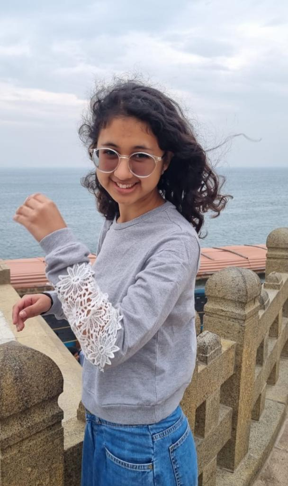

UG2k21 CND IIITH
I studies in Lotus Valley Internation School Noida till 12th grade. I pursued a lot of interests like theatre, singing, sports, astronomy, robotics and many more by joining clubs, taking part in competitions and going on club trips. I scored a 98.2% in my 10th boards and 98% in my 12th boards. I also remained German subject topper for the 3 years I was learning it at school and I also proved my mettel in German Olympiads
Academically, I've been surprisingly doing extremely well in college getting a CGPA of 10 in sem1, 9.62 in sem 2 and currently await the sem3 CGPA(I wanted to update it on the resume but the academic departemnt is yet to announce it) I always wished to pursue research so my focus was mainly on college academics. However since the past sem, my interests have ventured far and wide and I'm currently exploring open source. My next stop would be thorough web development and this website is just the beginning✨
I also earned a diploma in Kathak and a 2nd year keyboard certification in Indian Classical Music. I participated in debates, MUNs, Symposiums and speeches pertaining to the topics I am very passionate about like politics, modern colonisation, environment and ethics
What my past has held for me...
What will take me to
my future?
I love to interact with people, work as a team and have great interpersonal skills.
I am accountable and people can depend on me since I always respect my commitments.
I love to experiment and I’m not afraid to make mistakes.
I am ambitious and organized. My most elaborate goals are accompanied by equally detailed and meticulous roadmaps.
I love solving problems which is why I wish to pursue research.